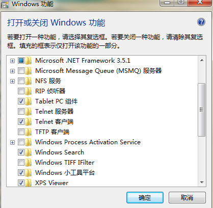
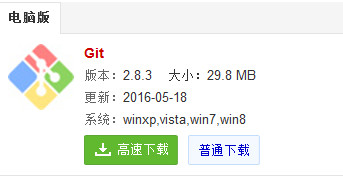
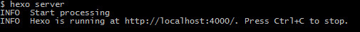

hexo在github的搭建

安装node.js
下载-安装

参考链接：
http://jingyan.baidu.com/article/b0b63dbfca599a4a483070a5.html
打开Telent客户端（如果没打开会出错）
如果是windowXP
输入
win7:

xp:
在[运行]中输入”services.msc”，确定后出现[服务管理器]；
或者在[控制面板]里进入[管理工具]，运行[服务]就会出现[服务管理器]；
在[服务管理器]中找到[Telnet] 项，按键盘的”t”-“e”-“l”键很快就能找着；
在双击后出现的[属性对话框]中[启动类型]改为[自动]或[手动]；
启动Telnet服务
在[属性对话框]中的[服务状态]项中点击[启动]；
在[运行]中输入”cmd”，确定后在光标提示符输入”net start telnet”回车，当屏幕显示”Telnet服务正在启动…Telnet 服务已经启动成功。”后，说明Telnet服务已经在你本机启动了。
安装git

点击下一步完成即可
SSH
生成SSH密钥
查看是否已经有了ssh密钥：1
cd ~/.ssh
如果没有密钥则不会有此文件夹，有则备份删除
生成密钥：1
2$ ssh-keygen -t rsa -C “you@gmail.com”
按3个回车，密码为空。
最后得到了两个文件：id_rsa和id_rsa.pub
打开github网站
在github上添加ssh密钥，这要添加的是“id_rsa.pub”里面的公钥。
选择Settings

选择 SSH and GDP keys

点击new ssh key
添加id_rsa.pub里面的公钥到key中提交即可

#安装插件
1
npm install hexo-deployer-git --save
安装HEXO
官网：https://hexo.io/zh-cn/
右击选择 Bash

1
2
3
4
5
6
7
8
9
10
11
12
13
14
15选择想要存放盘 cd
npm install hexo-cli -g//安装
hexo -v//查看版本号（如果可以显示说明安装成功）
hexo init myblog//初始化一个博客（myblog随便取）
cd myblog//选择（同上面myblog的取名）
npm install//初始化博客
hexo g//生成静态网页（输入后查看根目录是否有public文件夹，如果没有请重装）
hexo server//开启服务器

在浏览器中输入：http://127.0.0.1:4000/

安装完成
建github库与推送

复制克隆码（一定要是SSH的）
打开博客存放位置进入_config.yml（配置文件）
在deploy:位置输入
1 | deploy://前面不能有有空格 |
推送
hexo clean//清除原静态网页
hexo generate//生成静态网页
hexo deploy//推送